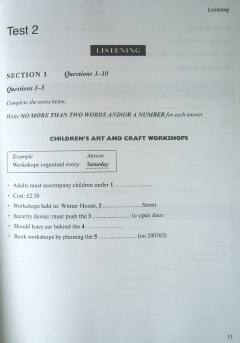

CIIELTS imtihoniga tayyorgarlik ko'rish uchun mo'ljallangan amaliy test topshiriqlari.
Ushbu kitob xalqaro Ingliz tili imtihoni bo'lgan IELTS imtihoniga tayyorgarlik ko'rish uchun mo'ljallangan test topshiriqlarini o'z ichiga oladi. Material tinglab tushunish, o'qish, yozish va so'zlashish ko'nikmalarini amalda sinab ko'rishga yordam beradi. Undagi mashqlar talabalar va til o'rganuvchilar uchun imtihon formatiga moslashishda muhim qo'llanma hisoblanadi.